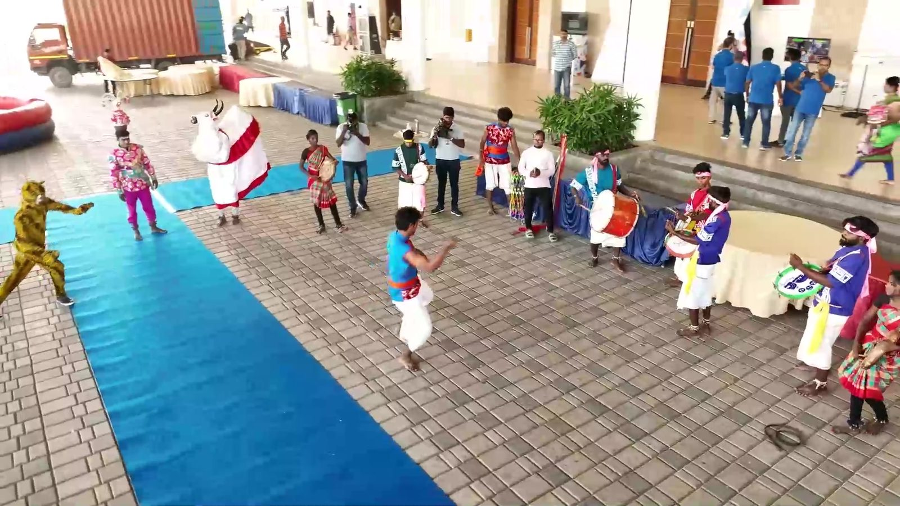
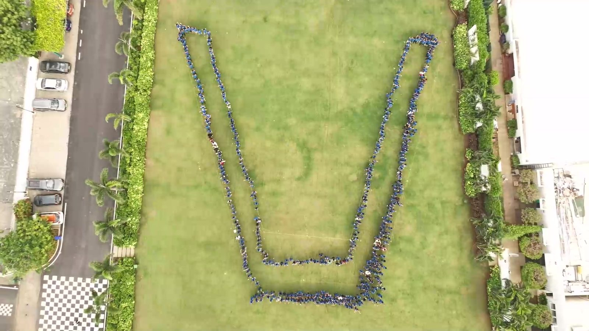
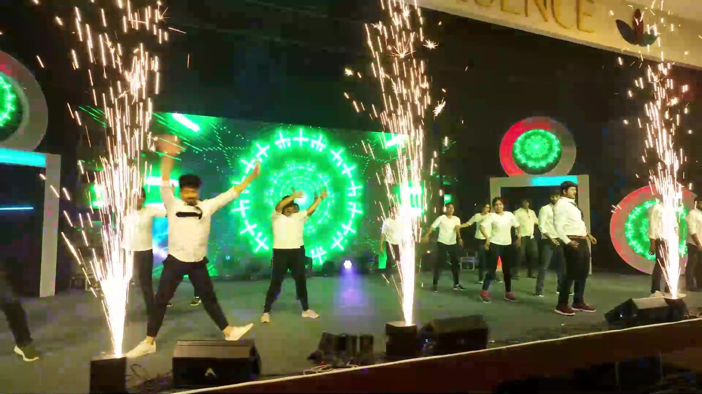
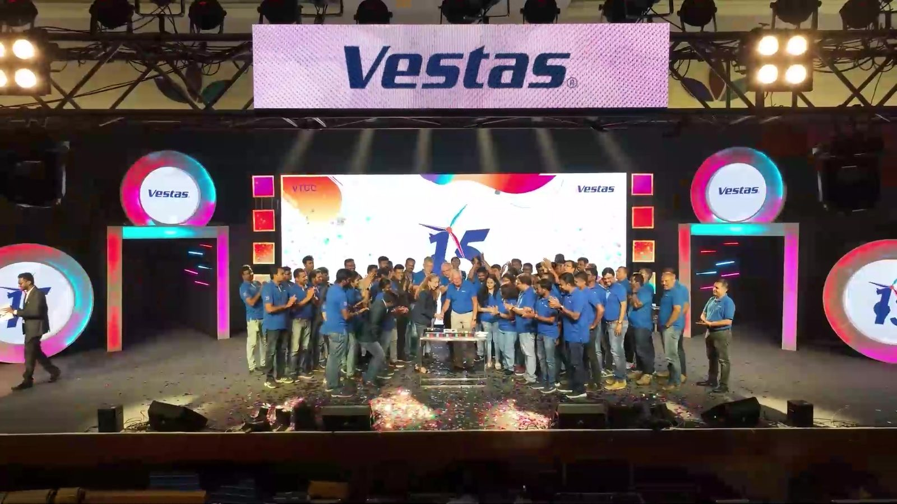

In 2022, the Vestas Technology Centre Chennai (VTCC) turned 15 years old in India. Fifteen years of engineers, analysts and specialists building the technology behind Vestas turbines. The theme on every welcome board said it best: Building Excellence Through Trust. Our job was to make that feel true for every person who walked in.
A welcome that said "this is yours"
The day started at the gate. A giant 15 arch, a blue carpet and boards that simply said: VTCC welcomes you. Then came the drums. Folk dancers and drummers met people at the entrance, and within minutes the most reserved engineers were clapping along and stepping in.

One V, everyone in it
Out on the lawn, the whole centre came together for one picture that no one could make alone. Hundreds of people in Vestas blue, standing shoulder to shoulder, formed a giant human V. From the ground it was a crowd. From the sky it was one team.
From the ground, a crowd. From the sky, one team.

An evening on stage
As the light faded, the celebration moved indoors to a stage lit in colour. Colleagues performed for colleagues: dances, songs and a finale with sparklers that brought the room to its feet. The whole team crowded the stage under the 15 for the moment everyone would want a photo of.


Ending on one beat
We closed with a drum circle. A drum on every chair, leaders next to new joiners, and one rhythm that grew until the whole hall was playing, laughing and dancing to it. Fifteen years of working together, felt in a few minutes of playing together.
Why it works: Us, in every moment
An anniversary can easily become a speech and a cake. VTCC's became a day where every person had a part: in the welcome, in the V, on the stage and in the circle. That is the Us in our I to We to Us philosophy, and it is how we have approached five years of events with Vestas.
Watch the VTCC 15 film on our Events page →
Marking a milestone year? Our corporate events turn anniversaries into days your people feel part of, not just watch. Let's plan yours.